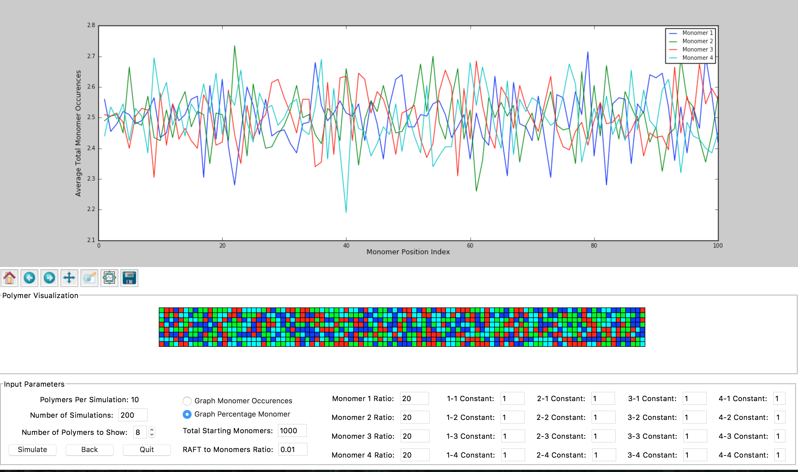

This program simulates RAFT polymer growth based on Mayo Lewis equation and Monte Carlo method.
View the Project on GitHub shinyxspoon/CompositionalDrift
TESTING The project is developed by Vincent Wu.
This website is maintained by Walter Wu
and Vincent Wu